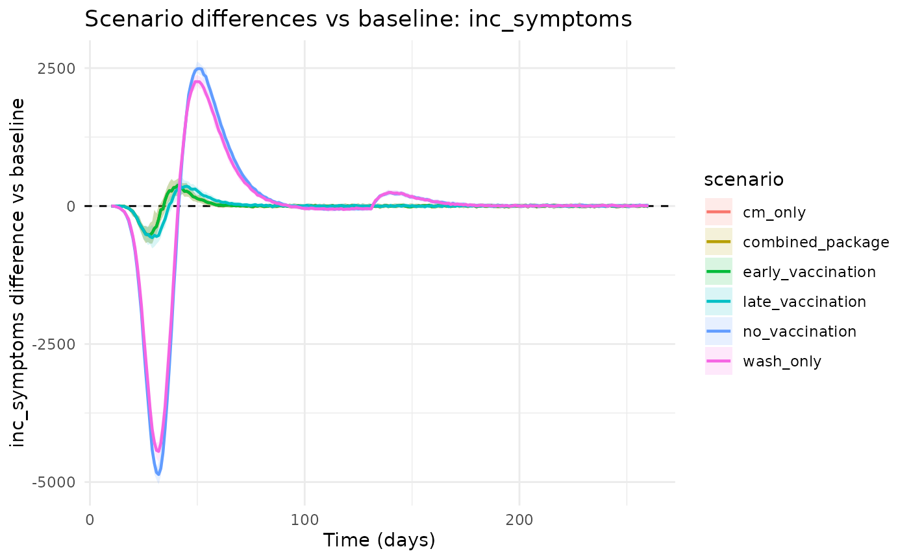
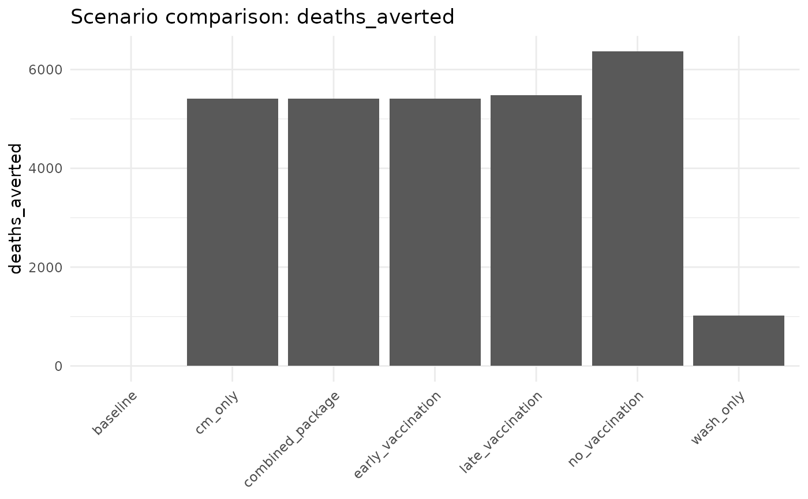

Why This Workflow?
This vignette shows how to move from a baseline simulation to operational scenarios, with emphasis on clear comparisons:
- Trigger detection.
- Snapshot branching (counterfactuals from a shared epidemic state).
- Overlay plots and baseline-difference plots.
- Compact scenario summary tables.
1) Baseline Preview And Trigger Time
We use a simple threshold trigger (15 daily cases) as an
example operational rule.
pars <- chlaa_parameters()
time_preview <- 0:260
baseline_preview <- chlaa_simulate(
pars,
time = time_preview,
n_particles = 40,
dt = 1,
seed = 1
)
trigger_time <- chlaa_trigger_time_from_sim(
baseline_preview,
threshold = 15,
var = "inc_symptoms"
)
trigger_time
#> [1] 102) Build Standard Scenario Set
scenarios <- chlaa_standard_scenarios(
pars = pars,
trigger_time = trigger_time,
horizon = max(time_preview),
vax_total_doses = 60000
)
vapply(scenarios, `[[`, character(1), "name")
#> [1] "baseline" "no_vaccination" "early_vaccination"
#> [4] "late_vaccination" "wash_only" "cm_only"
#> [7] "combined_package"3) Branch Counterfactuals From A Shared Snapshot
Snapshot branching keeps pre-trigger epidemic history identical across scenarios, which improves interpretability of differences after the intervention start.
snap <- chlaa_snapshot_create(
pars = pars,
snapshot_time = trigger_time,
n_particles = 40,
dt = 1,
seed = 1
)
post_time <- trigger_time:max(time_preview)
runs <- chlaa_run_scenarios_from_snapshot(
snapshot = snap,
pars = pars,
scenarios = scenarios,
time = post_time
)
head(runs)
#> scenario time particle S E A M Sev Mu Mt Sevu Sevt Ra Rs V1 V2 Du
#> 1 baseline 10 1 539080 686 141 16 8 15 0 9 0 38 5 0 0 2
#> 2 baseline 10 2 539096 674 128 21 5 30 0 6 0 37 2 0 0 1
#> 3 baseline 10 3 539224 543 130 22 6 17 0 8 0 45 5 0 0 0
#> 4 baseline 10 4 539057 691 138 28 10 22 0 10 0 36 6 0 0 2
#> 5 baseline 10 5 539066 677 147 24 1 24 0 16 0 42 2 0 0 1
#> 6 baseline 10 6 538859 845 180 22 15 19 0 19 0 35 4 0 0 2
#> Dt C inc_infections inc_symptoms inc_deaths inc_vax1 inc_vax2
#> 1 0 0.009695160 323 21 0 0 0
#> 2 0 0.010350478 309 16 0 0 0
#> 3 0 0.009002428 238 20 0 0 0
#> 4 0 0.011948869 318 29 1 0 0
#> 5 0 0.012605655 336 17 0 0 0
#> 6 0 0.014912023 370 31 0 0 0
#> cum_infections cum_symptoms cum_deaths cum_vax1 cum_vax2 cum_orc_treated
#> 1 919 54 2 0 0 0
#> 2 902 63 1 0 0 0
#> 3 775 56 0 0 0 0
#> 4 941 76 2 0 0 0
#> 5 932 66 1 0 0 0
#> 6 1141 79 2 0 0 0
#> cum_ctc_treated
#> 1 0
#> 2 0
#> 3 0
#> 4 0
#> 5 0
#> 6 04) Compare Scenario Trajectories
chlaa_plot_scenario_overlay(runs, var = "inc_symptoms")
chlaa_plot_difference_vs_baseline(
runs,
baseline = "baseline",
var = "inc_symptoms",
cumulative = FALSE
)
chlaa_plot_difference_vs_baseline(
runs,
baseline = "baseline",
var = "inc_symptoms",
cumulative = TRUE
)
5) Summaries For Decision Support
summary_tbl <- chlaa_scenario_summary(runs, baseline = "baseline")
summary_tbl
#> # A tibble: 7 × 8
#> scenario total_cases total_deaths cases_averted deaths_averted peak_incidence
#> <chr> <dbl> <dbl> <dbl> <dbl> <dbl>
#> 1 baseline 232004. 33710. 0 0 7310.
#> 2 cm_only 231918. 28301. 86.6 5409. 7253.
#> 3 combined… 231918. 28301. 86.6 5409. 7253.
#> 4 early_va… 231918. 28301. 86.6 5409. 7253.
#> 5 late_vac… 231701. 28232. 304. 5478. 6948.
#> 6 no_vacci… 224871. 27348. 7133. 6362. 4433.
#> 7 wash_only 225212. 32685. 6792. 1026. 4478.
#> # ℹ 2 more variables: time_peak <dbl>, time_to_control <dbl>
cmp <- chlaa_compare_scenarios(
runs,
baseline = "baseline",
include_econ = TRUE,
wtp = 1500
)
cmp
#> # A tibble: 7 × 21
#> scenario infections cases_symptomatic deaths doses orc_treated ctc_treated
#> <chr> <dbl> <dbl> <dbl> <dbl> <dbl> <dbl>
#> 1 baseline 937638. 232004. 33710. 0 0 0
#> 2 cm_only 937244. 231918. 28301. 0 22901. 10769.
#> 3 combined_pa… 937244. 231918. 28301. 0 22901. 10769.
#> 4 early_vacci… 937244. 231918. 28301. 0 22901. 10769.
#> 5 late_vaccin… 936463. 231701. 28232. 60000 23307. 10853.
#> 6 no_vaccinat… 908982. 224871. 27348. 0 26354 10537.
#> 7 wash_only 910508. 225212. 32685. 0 0 0
#> # ℹ 14 more variables: infections_averted <dbl>, cases_averted <dbl>,
#> # deaths_averted <dbl>, cost <dbl>, dalys <dbl>, cost_diff <dbl>,
#> # dalys_averted <dbl>, icer_cost_per_daly_averted <dbl>,
#> # icer_cost_per_death_averted <dbl>, mean_cost_vax <dbl>,
#> # mean_cost_care <dbl>, mean_cost_wash <dbl>, nmb <dbl>, inmb <dbl>
chlaa_plot_scenarios(cmp, metric = "deaths_averted")
Interpretation
Use this pattern when you need transparent post-trigger comparisons.
For full posterior scenario forecasting, use
chlaa_forecast_scenarios_from_fit() and
chlaa_plot_scenario_forecasts().